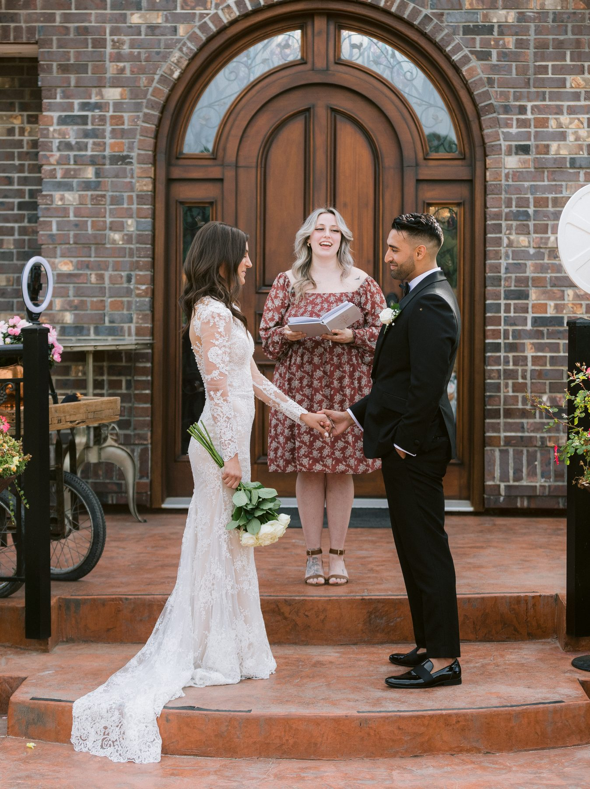
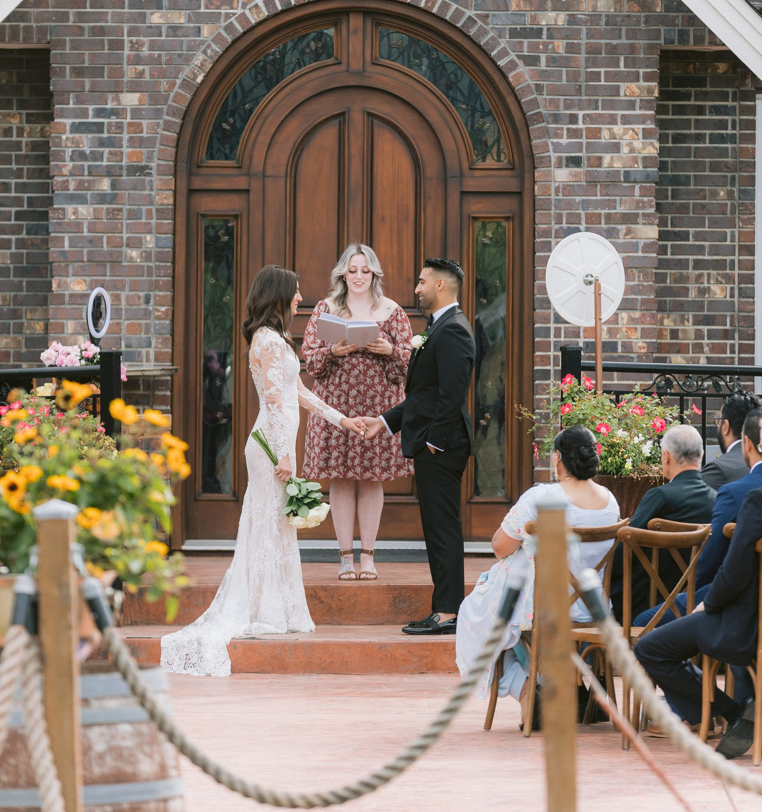
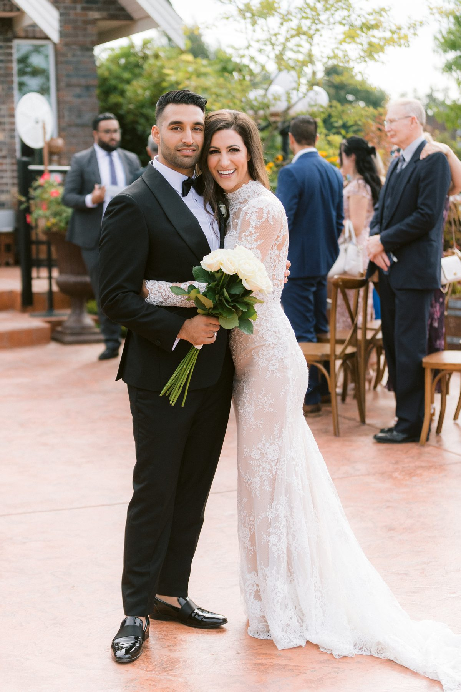
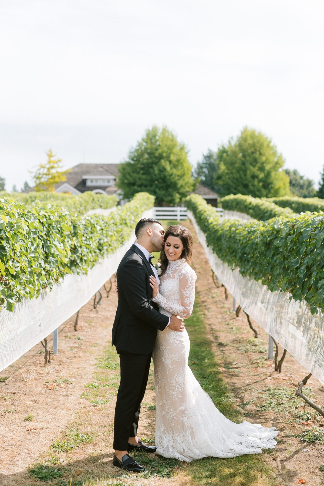
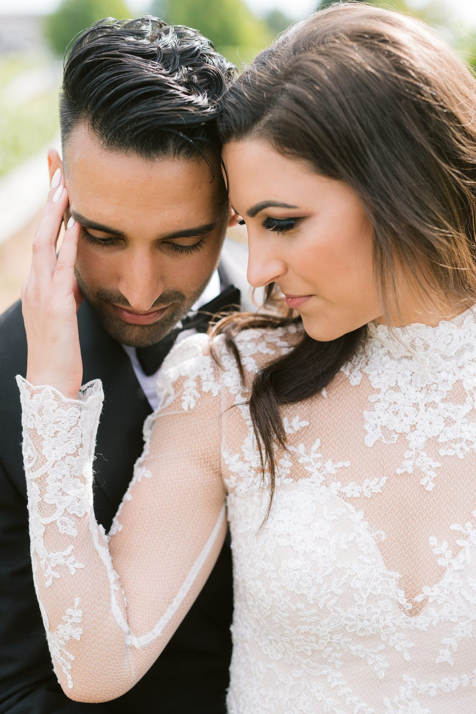
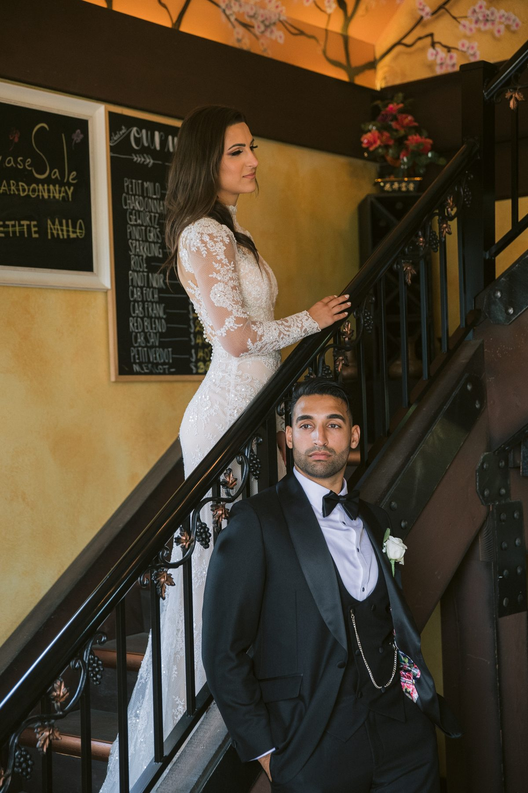
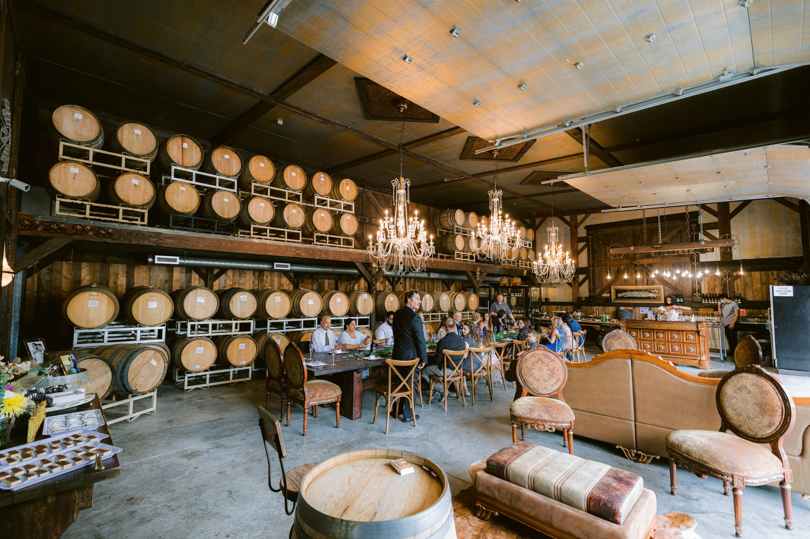
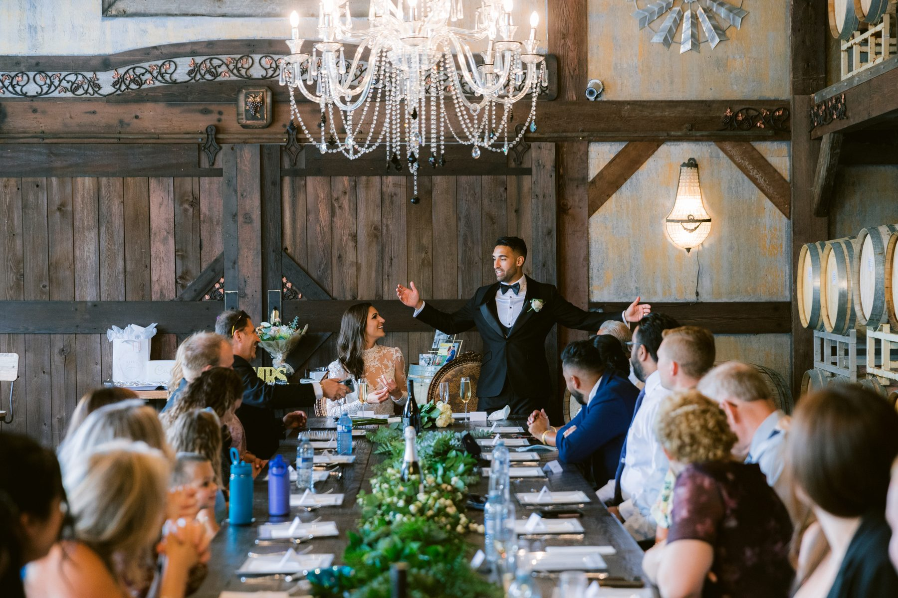

Janna and Lucky got married on the front steps of a small brick chapel in the middle of a vineyard. Then everyone walked across the property to a hall stacked to the rafters with wine barrels and sat down at one long table.
That was the whole plan. One property, two rooms, a small guest list. It photographs like a much bigger production, and it is worth understanding why.
Lucky got ready in a black tuxedo with a waistcoat and a pocket watch on a chain. I love a detail like that. It took him ten seconds to put on and it gave us a whole set of photos, hands, chain, watch face, before the day had even started.
If you are the one who thinks getting ready photos are not for you, bring one object that means something. A watch, a pair of cufflinks, a handwritten card. It gives your hands a job, and the nerves go quiet.
A vintage black Rolls Royce rolled up the vineyard lane with a chauffeur in a cap at the wheel. White fence on one side, vines on the other, guests already in their seats.
A car like this is not about transport. It is an entrance. If you book one, tell your photographer the exact arrival time and which way it is coming from. The best frame happens thirty seconds before the door opens, and somebody has to be standing on the lane to get it.
The ceremony happened outside, on the terracotta steps of the chapel, in front of a pair of arched wooden doors. Guests sat on wooden cross back chairs on the patio. Sunflowers along a rope rail. An officiant reading from a book, and a lot of laughing for a ceremony.

Steps do two useful things. They lift you up, so the back row sees your faces and not the heads in front. And a big doorway behind you frames the photo without a single flower arch or backdrop. You are paying for the building. Let it do the work.
The sky was bright and overcast, which is the light every photographer quietly hopes for. No squinting, no hard shadows under the eyes, and a white lace gown that keeps all of its detail. If you are choosing a ceremony time at an outdoor venue, ask where the sun will be at that hour. It matters more than the colour of the chairs.

Here is the best part of a vineyard. The portrait location is right there. The rows start a short walk from the chapel doors.

Vine rows are a gift. They are long straight lines that all point at the two of you, and they look the same in every direction, so nobody has to hunt for a clean background. We kept it loose. Walk, stop, lean in, say something to each other. Janna's long sleeve lace did the rest.

No driving between locations is the quiet win here. Travel between locations eats more of a wedding day than couples expect. There is more on that in how to build a wedding day timeline that does not run late. When the ceremony, the portraits and dinner all sit on one property, you get that time back. Spend it with your guests.
We also used a staircase inside the winery. Warm yellow walls, a black iron railing, and a chalkboard wine list on the wall behind them.

Every outdoor wedding needs one indoor spot like this. On a dry day it gives you a second look in five minutes. On a wet day it is your whole portrait plan. Ask your venue which indoor corners you are allowed to use, and ask before the day, not during it.
The reception was in a working barrel hall. Oak barrels racked two rows high along the wall, crystal chandeliers hanging from a timber ceiling, and vintage sofas pulled up to an upturned barrel.

Everyone sat at one long dark wood table with greenery running down the middle. One table changes a dinner. Nobody gets parked at the far table by the kitchen door. Everyone can see whoever is speaking, and the speaker can see every face.

Lucky stood up with his arms wide open and the whole table turned toward him. That is the photo I would frame.
One honest warning. A room like this is dark. Dark wood, warm bulbs, not much window. It looks incredible in person and it is hard on a camera. Before you book anyone for a winery or a barn, ask to see a full reception gallery from a dark room, not three highlights from golden hour.
Keep the whole day on one property if you can. Stand in front of something with a shape, a door, an arch, a set of steps. Seat everyone at one table when the guest list allows it. And if you have always wanted the old car, book the old car.
None of this needed a big guest list. If you are weighing up a smaller day, read what planning a 30 person wedding looks like.
SimplyWed Studio is a Vancouver wedding and elopement photography studio. Tell us where and when through the contact page and we will plan the coverage around the property, the light and the dark room at the end of the night.
← Back to the journal